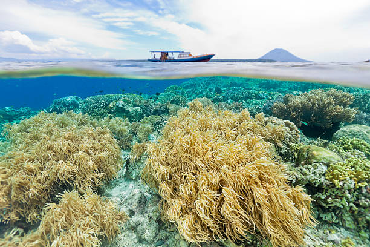
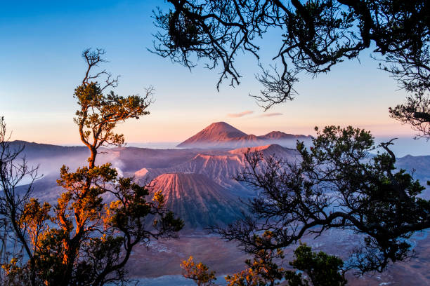

I am an individual who has a passion for learning new things, especially in the world of information technology. I always enjoy gaining new knowledge and developing the skills I have so that I can continue to contribute to the ever-growing world of technology. I am happy if I can collaborate with people who have a professional spirit in development